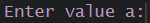
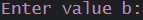

- URL shortener
- email generator [considering name, surname, age]
- dice simulator
- leap year estimator
R for Data Analysis
Now that you’re more advanced in R, we can start analyzing sets of
data! Both Python and R are commonly used for data analysis, given their
powerful possibilities of data visualisation, enabeling to not only
create beautiful graphs, but also make them interactive!
You’lll however need to remember that everyone takes notes a little
bit differently! This means you’ll encounter different types of data
set, organized in their own way! The clue is to sort your data and keep
it tidy! … and to be patient!
How to keep your data organized?
Let’s again consider the data frame you prepared in Lesson 1,
Exercise 6.
Activate this code snippet to create a new variable.
data_mice <- data.frame(
Mice_name = c("Albert", "Minnie", "Mario", "Betty", "Elliot", "Albert", "Mario", "Minnie", "Elliot", "Clara", "Teddy", "Elliot"),
travel = c(-12, -7.5, 12, 7.5, 12, 12, -15, -7.5, 7.5, -12, 7.5, 12)
)
Now, the variable will be gone the next time someone clears the
objects from the workspace. To save your work, you’d need to store your
data frame inside a file. Let’s try it out! Activate the code snippet
below and View each file you created to see the differences.
What is the data points separator for the table? And for the csv? And
csv2?
And what does ‘row.names’ change?
Write the answers in your working file.
write.table(data_mice, "mice_table.csv")
write.csv(data_mice, "mice_csv.csv")
write.csv2(data_mice, "mice_csv2.csv")
write.table(data_mice, "mice_table_rows.csv", row.names= TRUE)
write.csv(data_mice, "mice_csv_rows.csv", row.names= TRUE)
write.csv2(data_mice, "mice_csv_rows.csv", row.names= TRUE)
If you automate your workflow, you might get unsure whether the file was properly created. You can check it with a function! If you implement it as part of your program, it would print you a logical answer TRUE if the file was created properly.
Now, we can read our newly created files into a new variable in our
work space! Again, we can use different functions, dependent on the type
of file we want to open.
table1 <- read.table("mice_table.csv") # for space-separated data
csv1 <- read.csv("mice_csv.csv") # for comma-separated data
csv2 <- read.csv2("mice_csv2.csv") # for semicolon-separated data
# for space-separated text files to be formatted into tables
# with dot as a decimal point
text_file1 <- read.delim("textfile.txt")
# for space-separated text files to be formatted into tables
# with comma as a decimal point
text_file1 <- read.delim2("textfile.txt")
We can further specify the details of those functions and read the semicolon-separated data with read.csv function too!
Header is the question of whether the first row of the table/csv file
should be treated as column names or not. By default, this option is
TRUE, so csv1 and next_csv variables should be looking the same
way!
sep is a data points separating value, while dec is a decimal
point
Always make sure what delimiter and decimal point your data set has!!
If you won’t - some data points might be transformed, being wrongly
treated by the function. This might result in the computer wrongly
understanding your data set and slicing it into columns in the wrong
manner, which will later lead to the wrong conclusions from our
analysis.
Keep in mind that the standard international data decimal point is a dot ‘.’, whereas Polish decimal point is a comma ‘,’!!!!!
Let’s now check the basic details about our small data set.
class(next_csv) # type of data
class(table1) # for comparison, check the class of your table
str(next_csv)
summary(next_csv)
ncol(next_csv) # number of columns
nrow(next_csv) # number of rows
dim(next_csv) # dimensions of our data frame
# Let's check the beginning and the end of the set:
head(next_csv)
tail(next_csv)
# how many data points are inside the column Mice_name?
length(next_csv$Mice_name)
# Does the distance column contains Not Available (Missing) Data?
is.na(next_csv$travel)
mean(next_csv$travel)
mean(next_csv$travel, na.rm = TRUE) # disregard NA values while counting mean
sum(next_csv$travel)
min(next_csv$travel)
max(next_csv$travel)0
You can further check and change the names of the columns in your
data set.
colnames(next_csv) # names of columns
# You can change those names:
names(next_csv) <- c("Here", "Put", "Names")
names(next_csv) <- c("No.", "Mice Name", "Distance")
colnames(next_csv)
Now we can divide our data set into smaller subsections.
Numeric indexing:
subsection1 <- next_csv[,2] # mice names only
subsection2 <- next_csv[2,2] # only 2nd name of the mouse = Minnie
subsection3 <- next_csv[2,] # 1 row with Minnie data
subsection4 <- next_csv[2:4,] # rows with Minnie, Mario and Betty data
Name indexing:
subsection11 <- next_csv[,"Mice Name"] # mice names only
subsection22 <- next_csv[2,2] # only 2nd name of the mouse = Minnie
subsection33 <- next_csv["2",] # 1 row with Minnie data
subsection44 <- next_csv["2","Mice Name"] # only the name of the 2nd mouse
subsection55 <- next_csv["2":"4","Mice Name"] # only names of 2nd-4th mouse
Logical indexing:
subsection111 <- next_csv[,next_csv$`Mice Name`] # mice names only
subsection222 <- next_csv[next_csv$No. == 2,next_csv$`Mice Name`] # only 2nd mouse name = Minnie
subsection333 <- next_csv[next_csv$No. == 2,] # 1 row with Minnie data
subsection444 <- next_csv[next_csv$`Mice Name`=="Minnie",] # all rows for Minnie
subsection555 <- next_csv[next_csv$No. == 2:4,"Mice Name"] # only names of 2nd-4th mouse
Did you notice that indexing requires square parenthesis ‘[]’, while functions used ‘()’?
Let’s remind you about factors! Look inside the Environment Tab -
does ‘Mice Name’ appear as class character or rather a factor?
You might’ve noticed, some of the mice names come twice in the data
set. We can distinguish it as a factors, in order to group the column of
mice names into categories dependent on the name. We could also create
an additional column specifying the gender of a mouse. This way we can
further assess whether the group of male mice liked brie more than the
female mice! We can also define another column, which would be a factor
- we could define a group “Brie” and group “Gouda”. This way we could
also get rid of the values below zero and only work on absolute
values!
is.factor(next_csv$`Mice Name`)
next_csv$`Mice Name` <- as.factor(next_csv$`Mice Name`)
# create a new column
mice_gender <- c("Male", "Female", "Male", "Female","Male", "Male", "Male", "Female", "Male", "Female", "Female", "Male")
next_csv <- cbind(next_csv, mice_gender) # (what to update, what to put in)
is.factor(next_csv$mice_gender)
next_csv$mice_gender <- as.factor(next_csv$mice_gender)
Now, although now we work on a limited set of data, later we’ll work
on much bigger sets, which will make us need to delete several parts of
the table, in order to focus only on the elements of the table that
interests us.
If any of the following gives you an error, you might want to
reconsider creating data frame ‘next_csv’ once again and redo renaming
the columns.
# all 4 lines below perform the same action but with a different code
next_csv$No. <- NULL
next_csv <- next_csv[,-1]
next_csv <- next_csv[, !names(next_csv) == "No."]
next_csv <- next_csv[, !names(next_csv) %in% "No."]
# delete fragments of columns
next_csv <- next_csv[-2:4, ] # delete data for mice 2 to 4th
next_csv <- next_csv[-c(2:4), ] # delete data for mice 2 to 4th
Reload the data frame again, so that it contains three columns : Mice Name, Distance and Mice Gender. Make that last one a factor and now let’s check and analyze our subsections of data!
# how many mice went after cheese which was located 12cm away from them?
length(next_csv$Distance[next_csv$Distance == 12])
# how many mice were female?
length(next_csv$mice_gender[next_csv$mice_gender == "Female"])
# how many mice were male?
length(next_csv$mice_gender[next_csv$mice_gender == "Male"])
# how many mice were male AND went after cheese 12cm away?
# this will show only data points where both conditions are met
length(next_csv$mice_gender[next_csv$mice_gender == "Male" & next_csv$Distance == 12])
# how many mice were male OR went after cheese 12cm away?
# this will show only data points where EITHER condition is met
length(next_csv$mice_gender[next_csv$mice_gender == "Male" | next_csv$Distance == 12])
# sort from smallest value to highest
next_csv$Distance <- sort(next_csv$Distance)
# sorts from highest to smallest value
next_csv$Distance <- sort(next_csv$Distance, decreasing = TRUE)
# Check the order of the values in 'Distance'
# This values inform you about the rank of the value
order_variable <- order(next_csv$Distance)
next_csv <- cbind(next_csv, order_variable)
# character matching
# do we have a mice name "Minnie"?
match("Minnie", next_csv$`Mice Name`) # match only returns ONE, first match!!!!!
grep("Minnie", next_csv$`Mice Name`) # grep will show you both no. rows for Minnie
# partial matching
grep("Min", next_csv$`Mice Name`) # all names containing "Min"
grep("M", next_csv$`Mice Name`) # all names with capital M
# which rows have a value of "Minnie" inside column "Mice Name"
# returns a whole column of logical answers
# This means it can help you deeply while analyzing data!!
# Because you could redefine it to say "Is this pH acidic?"
# or "is my substance lipophilic enough to make that action in the cell?"
# or any other descriptor delimiting whether there's a visible action
next_csv$`Mice Name` %in% "Minnie"
As earlier implied, functions available in the basic version of R
might not be sufficient enough to answer all problems a user could
have.
In Lesson 3 you were introduced to the creation of your own
functions. If you made more than 10, it might be useful to consider
taking them all together into a package. This way, instead of loading
our 10+ functions to our Environment each time we start working, we can
simply call ‘library()’ function and call all of our functions at
once!
This course will not teach you how to make your own package, but will
introduce you to the already existing ones, heavily recommended by data
analysts.
This package is Tidyverse, which includes several
other packages inside - it’s like a Matryoshka doll! You can also think
of it as a series of books, out of which all enable you to tidy your
data set, but each will do so in a different manner.
You can check out the core tidyverse packages here.
Mice_time <- c("Time1", "Time1", "Time2", "Time1", "Time3", "Time2", "Time1", "Time2", "Time1", "Time1", "Time1", "Time2")
next_csv5 <- cbind(next_csv, Mice_time)
next_csv5$Mice_time <- as.factor(next_csv5$Mice_time)
logical_time1 <- next_csv5$Mice_time == "Time1"
logical_time2 <- next_csv5$Mice_time == "Time2"
logical_time3 <- next_csv5$Mice_time == "Time3"
next_csv5 <- cbind(next_csv5, logical_time1)
next_csv5 <- cbind(next_csv5, logical_time2)
next_csv5 <- cbind(next_csv5, logical_time3)
next_csv5$logical_time3 <- replace(next_csv5$logical_time3, "FALSE", NULL)
next_csv5$logical_time3[next_csv5$logical_time3 == "FALSE"] <- NA
next_csv5$logical_time2[next_csv5$logical_time2 == "FALSE"] <- NA
next_csv5$Mice_time2 <- gather(next_csv5, Distance, Mice_time, c(logical_time2, logical_time3))
next_csv5$logical_time3 <- as.character(next_csv5$logical_time3)
next_csv5$logical_time2 <- as.character(next_csv5$logical_time2)
DPLYR
Exclude Mice Name columns out of the data set
ext_csv3 <- next_csv3[, setdiff(colnames(next_csv3), "Mice Name")]
select(next_csv, "Mice Name") select only one column
select(next_csv, -"Mice Name") select everything BUT that one column
select(next_csv, "Mice Name":"mice_gender") select everything from names to gender (3 columns)
select(next_csv, starts_with("M")) # select only the columns with names starting with M
# function_name <- function(here you specify whether the function has arguments it needs to work, like specifying a number of times a function runs, or a set the function should use)
my_function <- function() {
# here you'd write instructions for what would your function do
# it can be automating mathematical operations, like printing the mean of a given set and further presenting minimum, maximum of the set etc.
}
So consider that if you put any of the following statements, they can
be automatized in a function, which small programs will exemplify you
more.
You can add a function, which means now you’d only have to write function(a,b) to get the result.
is_a_bigger <- function(a,b) {
if (a < b) {
print("b is greater than a ")
} else {
print("a is greater than b ")
}
}
is_a_bigger(a,b)
is_a_bigger(5,10)
is_a_bigger(10,5)
We can avoid having to write anything else than the value of a and b - by adding small elements to our code in order to allow us to see the prompt automatically coming back, asking to  and further -  and print us which value is greater than the other. You can see however that instead if print() function now, I used cat() in order to print both the string and the values attributed both to a and b.
You can also see a ‘while’ (TRUE) which in this particular situation
means the console will ask you to provide ‘a’ and ‘b’ all the time, in
an infinite loop, not stopping until you click Esc.
is_a_bigger <- function(a,b) {
if (a < b) {
cat("b (equal to ", b, ")", " is greater than a (equal to ", a, ")")
} else {
cat("a (equal to ", a, ")", " is greater than b (equal to ", b, ")")
}
}
while (TRUE){
a <- as.numeric(readline("Enter value a:"))
b <- as.numeric(readline("Enter value b:"))
is_a_bigger(a,b)
}
A good representation of if/else statements inside of a program is defining whether a given pH value is acidic, neutral or basic. This has its simple rules, which we can write as:
We can implement these rules in our code!
You can see that in the next code snippet. Examine the lines and try to understand each of them. Focus on how the conditions are written. Which types of operators are used here?
while (TRUE) {
pH <- readline(prompt = "Enter pH value: ")
pH <- as.numeric(pH)
# Check if pH is greater than 7, less than 7 or equal to 7 and give conditions
if (is.numeric(pH) && !is.na(pH)) {
if (pH > 14) {
print("pH can only have a value between 0 and 14. Please enter the value fitting such profile.")
} else if (pH < 7 && pH >= 0) {
print("Your pH is acidic")
} else if (pH > 7 && pH <= 14) {
print("Your pH is basic")
} else if (pH==7) {
print("Your pH is neutral")
}
} else {
print("Invalid input. Please enter a numeric value for pH.")
}
}
This program doesn’t have a difficult task. Any chemist or bright
highschooler can tell you whether a given pH value is acidic or
basic.
However, such program can be useful if we have a table of data, where
we have a certain biological effect occurring with severity dependent on
the pH value. Then we could use our script to create an additional
column stating whether the pH is acidic or not.
Such applicability might be identifying cancer cells - given that they happen to keep a more acidic pH in the extracellular matrix than healthy cells. Hence, if we had fragments of cancerous and healthy tissues, we could use a program estimating whether the pH we measured is acidic or not, as it will help us identify which tissues might be cancerous!
What if we wanted our program to stop working while encountering a specific value?
While we work, there are some situations which would make us stop. It
might be our boss telling us it’s the end of the day or a stomach ache,
reminding you it’s time for lunch.
In the same manner you can break the ‘while (TRUE)’ loop, in order to
stop receiving a prompt in the console, asking us to provide a given
value. We can do that with ‘break’.
Let’s now consider another program running in the console. Copy the
code to RStudio and check the output.
random_number <- 7
x <- 1
while (TRUE) {
x <- readline(prompt = "Enter a number:")
x <- as.integer(x)
if (x != random_number) {
print("Wrong number, try again.")
}
else if (x == random_number) {
print("Bravo!")
break
}
}
This program allows you to guess a number you stated before
activating the while (TRUE) loop. However, if the input number is equal
to the random number we want to guess, the program will stop, right
after printing “Bravo!”.
Hence ‘break’ allows you to stop the infinite loop after you guess
correctly!
Now, just for fun, check out the next code:
while (TRUE) {
x <- 1
random_number <- floor(runif(1, min=1, max = 99))
x <- readline(prompt = "Enter a number from 1 to 99:")
x <- as.integer(x)
if (x != random_number) {
cat("Wrong number, it was", random_number, ", try again.")
}
else if (x == random_number) {
print("Bravo!")
break
}
}
Here you can see that random_number is not strictly defined before the program runs. Instead, we run ‘floor()’ and ‘runif()’ in order to generate a number each time we try to guess! You can try to run the program yourself and see whether you are lucky to guess at a glance!
Another interesting R program is the password generator. Analyze the code below to understand how such generator works. You can activate the code in RStudio if you want to try it out!
# we put everything in while TRUE in order to keep the console asking us for the prompt
while (TRUE) {
# now we set the function to generate passwords. We define that the only variable the function needs is the length of the password
generate_password <- function(desired_password_length) {
# we define the set of elements acceptable inside our password
elements <- c("a", "b", "c", "d", "e", "f", "g", "h", "i", "j", "k", "l",
"m", "n", "o", "p", "q", "r", "s", "t", "u", "v", "w", "x",
"y", "z", "0", "1", "2", "3", "4", "5", "6", "7", "8", "9")
# we create an empty variable that the function will fill
# and we treat that password as a string (character class)
password <- ""
# now we state that until we reach the desired length of the password,
# the function should generate each and every element
# so this means "while the length is not final yet, keep generating elements"
while (nchar(password) < desired_password_length) {
# elements generation with 'sample' and updating the variable each time the loop is performed
# you can see that sample uses elements variable in order to generate passwords
# sep means separating element. Here we set it blankm, as we don't want any delimiters
# between the letters
password <- paste(password, sample(elements, 1), sep = "")
}
return(password)
}
# here, we closed all {} parenthesis BESIDES 'while(TRUE)'
# this means we closed of alll instructions besides
# the one that keeps the prompt active
# start the counter so that the function knows
# how many passwords it generated
count <- 0
# ask prompt about the length of the desired password:
password_length <- as.integer(readline("Desired password length: "))
# check whether provided number is a natural number, is it even stated is it NA? is it Not Available Data?
if (is.na(password_length) || password_length <= 0) {
cat("You have to provide a number higher than 0.\n")
} else {
# ask prompt about the no. passwords to generate
no_passwords <- as.integer(readline("Desired number of generated passwords: "))
# is the provided value bigger than 0?
if (is.na(no_passwords) || no_passwords <= 0) {
cat("You have to provide a number higher than 0.\n")
} else {
# state that the function should run until it has enough passwords
# if after generating the next password the count is still lower than
# desired number of passwords, the no. count should be updated
# and the program should run until it provided enough passwords
while (count < no_passwords) {
count <- count + 1
# execute the password creation
password <- generate_password(password_length)
# show created passwords in the console, with their respective indices
cat("Passwords", count, ":", password, "\n")
}
# Show the count
cat("The function run count:", count, "\n")
}
}
}
You saw that functions can rely on variables and their content during
their work. It means the function can also be a dictionary for
you!
You could create a program that would provide you a definition to a
given word, like translate program allowing you to learn languages
faster or… a program that prints you the mass of a single element in
Mendeleyev’s Table!
No more do you have to check the Table again!
# Define a list of atomic masses from the Mendeleyev's Table
atomic_mass <- c("H"= 1.0079, "He"= 4.0026, "Li"= 6.941, "Be"= 9.0122,"B"= 10.811, "C"= 12.011, "N"= 14.007, "O"= 15.999, "F"= 18.998, "Ne"= 20.180, "Na"= 22.990, "Mg"= 24.305, "Al"= 26.982, "Si"= 28.086, "P"= 30.974, "S"= 32.065, "Cl"= 35.453, "Ar"= 39.948, "K"= 39.098, "Ca"= 40.078, "Sc"= 44.956, "Ti"= 47.867, "V"= 50.942, "Cr"= 51.996, "Mn"= 54.938, "Fe"= 55.845, "Co"= 58.933, "Ni"= 58.693, "Cu"= 63.546, "Zn"= 65.39, "Ga"= 69.723, "Ge"= 72.61, "As"= 74.922, "Se"=78.96, "Br"= 79.904, "Kr"= 83.80, "Rb"= 85.468, "Sr"= 87.62, "Y"= 88.906, "Zr"= 91.224, "Nb"= 92.906, "Mo"= 95.94, "Tc"= 97.61, "Ru"= 101.07, "Rh"= 102.91, "Pd"= 106.42, "Ag"= 107.87, "Cd"= 112.41, "In"= 114.82, "Sn"= 118.71, "Sb"= 121.76, "Te"= 127.60, "I"= 126.90, "Xe"= 131.29, "Cs"= 132.91, "Ba"= 137.33, "La"= 138.91, "Ce"= 140.12, "Pr"= 140.91, "Nd"= 144.24, "Pm"= 145.0, "Sm"= 150.36, "Eu"= 151.96, "Gd"= 157.25, "Tb"= 158.93, "Dy"= 162.50, "Ho"= 164.93, "Er"= 167.26, "Tm"= 168.93, "Yb"= 173.04, "Lu"= 174.97, "Hf"= 178.49, "Ta"= 180.95, "W"= 183.84, "Re"= 186.21, "Os"= 190.23, "Ir"= 192.22, "Pt"= 196.08, "Au"= 196.08, "Hg"= 200.59, "Tl"= 204.38, "Pb"= 207.2, "Bi"= 208.98, "Po"= 209.0, "At"= 210.0, "Rn"= 222.0, "Fr"= 223.0, "Ra"= 226.0, "Ac"= 227.0, "Th"= 232.04, "Pa"= 231.04, "U"= 238.03, "Np"= 237.0, "Pu"= 244.0, "Am"= 243.0, "Cm"= 247.0, "Bk"= 247.0, "Cf"= 251.0, "Es"= 252.0, "Fm"= 257.0, "Md"= 258.0, "No"= 259.0, "Lr"= 262.0, "Rf"= 261.0, "Db"= 262.0,"Sg"= 266.0, "Bh"= 264.0, "Hs"= 269.0, "Mt"= 268.0)
while (TRUE) {
# Read input atomic symbol
atomic_symbol <- readline(prompt = "Enter the atomic symbol: ")
# Calculate the mass based on the atomic symbol
# if the provided atomic symbol is inside atomic_mass vector then:
# mass should be updated with the mass attributed to the atomic symbol prompted
# and info should be printed to the console
if (atomic_symbol %in% names(atomic_mass)) {
mass <- atomic_mass[[atomic_symbol]]
print(paste("The mass of 1 mole of", atomic_symbol, "is", mass, "g."))
} else {
print(paste("Error: Invalid atomic symbol."))
}
}
Next program is going to seem a little more complicated, but it will
also allow us to get the mass of MOLECULES instead of atoms.
To do that, we have to consider explaining to out computer that: *
numbers to the right of element name is the no. atoms of this element *
everything inside parentheses should be multiplied by the first number
to the right after the parenthesis closes * the molecular formula should
be read like a pattern so we need regular expressions
atomic_mass <- c("H"= 1.0079, "He"= 4.0026, "Li"= 6.941, "Be"= 9.0122,"B"= 10.811, "C"= 12.011, "N"= 14.007, "O"= 15.999, "F"= 18.998, "Ne"= 20.180, "Na"= 22.990, "Mg"= 24.305, "Al"= 26.982, "Si"= 28.086, "P"= 30.974, "S"= 32.065, "Cl"= 35.453, "Ar"= 39.948, "K"= 39.098, "Ca"= 40.078, "Sc"= 44.956, "Ti"= 47.867, "V"= 50.942, "Cr"= 51.996, "Mn"= 54.938, "Fe"= 55.845, "Co"= 58.933, "Ni"= 58.693, "Cu"= 63.546, "Zn"= 65.39, "Ga"= 69.723, "Ge"= 72.61, "As"= 74.922, "Se"=78.96, "Br"= 79.904, "Kr"= 83.80, "Rb"= 85.468, "Sr"= 87.62, "Y"= 88.906, "Zr"= 91.224, "Nb"= 92.906, "Mo"= 95.94, "Tc"= 97.61, "Ru"= 101.07, "Rh"= 102.91, "Pd"= 106.42, "Ag"= 107.87, "Cd"= 112.41, "In"= 114.82, "Sn"= 118.71, "Sb"= 121.76, "Te"= 127.60, "I"= 126.90, "Xe"= 131.29, "Cs"= 132.91, "Ba"= 137.33, "La"= 138.91, "Ce"= 140.12, "Pr"= 140.91, "Nd"= 144.24, "Pm"= 145.0, "Sm"= 150.36, "Eu"= 151.96, "Gd"= 157.25, "Tb"= 158.93, "Dy"= 162.50, "Ho"= 164.93, "Er"= 167.26, "Tm"= 168.93, "Yb"= 173.04, "Lu"= 174.97, "Hf"= 178.49, "Ta"= 180.95, "W"= 183.84, "Re"= 186.21, "Os"= 190.23, "Ir"= 192.22, "Pt"= 196.08, "Au"= 196.08, "Hg"= 200.59, "Tl"= 204.38, "Pb"= 207.2, "Bi"= 208.98, "Po"= 209.0, "At"= 210.0, "Rn"= 222.0, "Fr"= 223.0, "Ra"= 226.0, "Ac"= 227.0, "Th"= 232.04, "Pa"= 231.04, "U"= 238.03, "Np"= 237.0, "Pu"= 244.0, "Am"= 243.0, "Cm"= 247.0, "Bk"= 247.0, "Cf"= 251.0, "Es"= 252.0, "Fm"= 257.0, "Md"= 258.0, "No"= 259.0, "Lr"= 262.0, "Rf"= 261.0, "Db"= 262.0,"Sg"= 266.0, "Bh"= 264.0, "Hs"= 269.0, "Mt"= 268.0)
# first, we have to define a function, which will be an element of a later 'parse' function
# this function would seek the closing parenthesis ')'
find_closing_paren <- function(tokens) {
#whenever this function starts, so does the counter (this helps the function assess when to stop)
count <- 0
# now we have to define that we should seek the ')' in the sequence provided from the variable 'tokens'
for (index in seq_along(tokens)) {
tok <- tokens[index] # indexes inside 'tokens' should be defined as 'tok' for simplicity
if (tok == ")") {
count <- count - 1 # now reduce the counter to show the function it should stop working
if (count == 0) { # so now, if the count is 0 the function can finish. If not, it means, that was a set of parenthesis inside of another parenthesis, like C(C(CO)2)2
return(index) # now to finish, show found indexes inside parenthesis | (OH)2 => index = OH
} # else, if there's a new parenthesis open, understand it as a different one and seek another closing
} else if (tok == "(") {
count <- count + 1
}
}
NA
}
parse <- function(tokens, stack, atomic_mass) {
if (length(tokens) == 0) {
return(sum(stack)) # if there are no tokens to parse, meaning if we take a blank input
}
tok <- tokens[1] # now we go to divide tokens into fragments
if (tok == "(") {
end <- find_closing_paren(tokens) # whenever you find an open parenthesis, function should seek its end
# if the end is found, next the tokens should be called, from the 2nd element (first chemical inside parenthesis. First element is = '('))
if (!is.na(end)) {
sub_tokens <- tokens[2:(end - 1)] # atoms should be received until the last one (-1 because ')' is that last element
sub_mass <- parse(sub_tokens, numeric(0), atomic_mass) # take what you selected in the last line and now parse those found elements into numbers, taken from the atomic_mass vector
stack <- c(stack, sub_mass) # stack should be updated by the mass we obtained in sub_mass
return(parse(tokens[(end + 1):length(tokens)], stack, atomic_mass))
} # else checks if the variable tok contains a string that consists only of digits (so if we have single chemical elements)
} else if (grepl("^\\d+$", tok)) {
stack[length(stack)] <- stack[length(stack)] * as.numeric(tok)
} else {
stack <- c(stack, atomic_mass[[tok]])
}
return(parse(tokens[-1], stack, atomic_mass))
}
while (TRUE) {
formula <- readline(prompt = "Enter molecular formula: ")
# our input formula will now be tokenized : changed into subscripts, which the computer will have to understand
# we provide the regular expression in order to specify the pattern the computer should seek inside input
# if the function regmatches() finds any other element - it won't be recognized
tokens <- regmatches(formula, gregexpr("[A-Z][a-z]*|\\d+|\\(|\\)", formula))[[1]]
cat("The molecular mass of", formula, "is", round(parse(tokens, numeric(0), atomic_mass), 3), "\n\n")
}
# function gregexp holds a regular expression like a string
# and expects big letters first, then eventually lower case letters as well
Inspect the last code snippet in detail. Read each comment and try to think of other examples in which you could use such statements.
Now, after inspecting several small programs, you’re ready to get
creative!
Pick one program to prepare out of each collapsible card of Level 1,
2 and 3 (3 programs total). Prepare the scripts in a new project,
comment your code to show its purpose and make the program run in the
console all the time (use while (TRUE) loop).
If you’d rather only do two programs - simply choose one from the Level
4 and then pick any from the other levels as the 2nd one.
YOU CAN SUGGEST your idea of a program to create during classes to
your teacher (Klaudia Chmielewska). The difficulty of the
chosen program will define how many less programs from the collapsible
buttons you have to prepare.
Finished programs should be sent in a zip file to klaudia.chmielewska@ug.edu.pl
If you have any difficulties after class, feel free to send an email there or to step by during my office hours in G320.
See you in the next lesson!